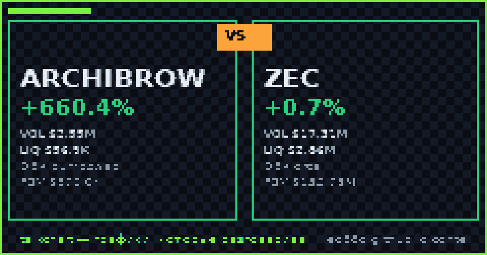

📈 TalkChart · каталог баттлов · [md для AI]
Срез данных: 2026-09-23 20:45 UTC · сеть Solana DEX

По ончейн-метрикам TalkChart: ARCHIBROWN опережает по ценовому импульсу (+660.4% против +0.7%). Кроме того, у ZEC более надёжная ликвидность ($2.86M против $56.9K). Кроме того, у ARCHIBROWN объём превышает ликвидность в 44.7× — признак экстремального хайпа и волатильности. Краткосрочный фаворит по совокупности факторов: ZEC.
| Параметр | ARCHIBROWN | ZEC | Лидер |
|---|---|---|---|
| Суточный рост (24ч) | +660.4% | +0.7% | ARCHIBROWN |
| Объём 24ч | $2.55M | $17.31M | ZEC |
| Глубина пула (TVL) | $56.9K | $2.86M | ZEC |
| Отношение Объём / TVL | 44.7× | 6.1× | — |
| DEX биржа | pumpswap | orca | — |
| Адрес пула | 4giAj2vc… | GTHKH8s8… | — |
По ончейн-метрикам TalkChart: ARCHIBROWN опережает по ценовому импульсу (+660.4% против +0.7%). Кроме того, у ZEC более надёжная ликвидность ($2.86M против $56.9K). Кроме того, у ARCHIBROWN объём превышает ликвидность в 44.7× — признак экстремального хайпа и волатильности. Краткосрочный фаворит по совокупности факторов: ZEC.
У ARCHIBROWN суточный объём $2.55M при ликвидности $56.9K. У ZEC объём $17.31M при ликвидности $2.86M.
ARCHIBROWN показал +660.4% за сутки, в то время как ZEC изменился на +0.7%.
Сгенерировано фабрикой контента TalkChart. Обновляется каждые 4 часа. Не является финансовой рекомендацией.